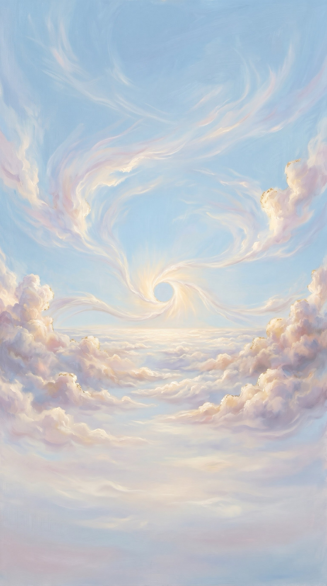
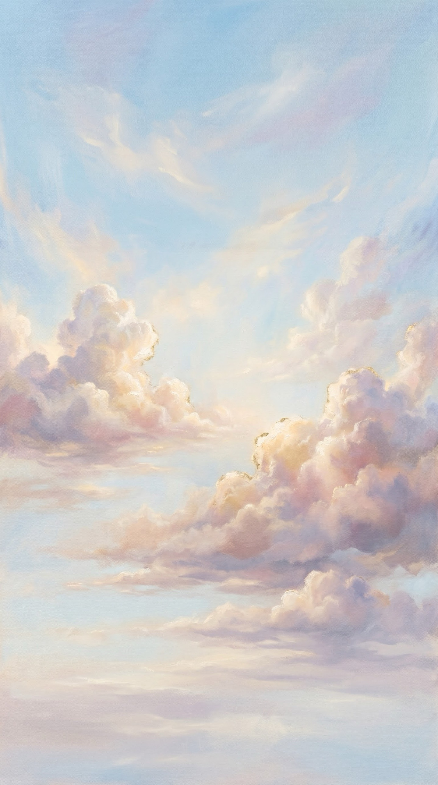
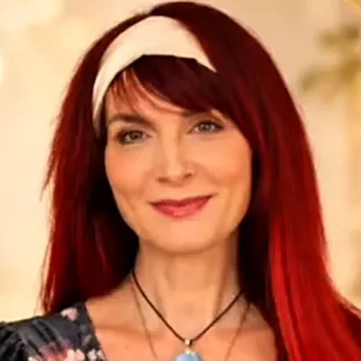
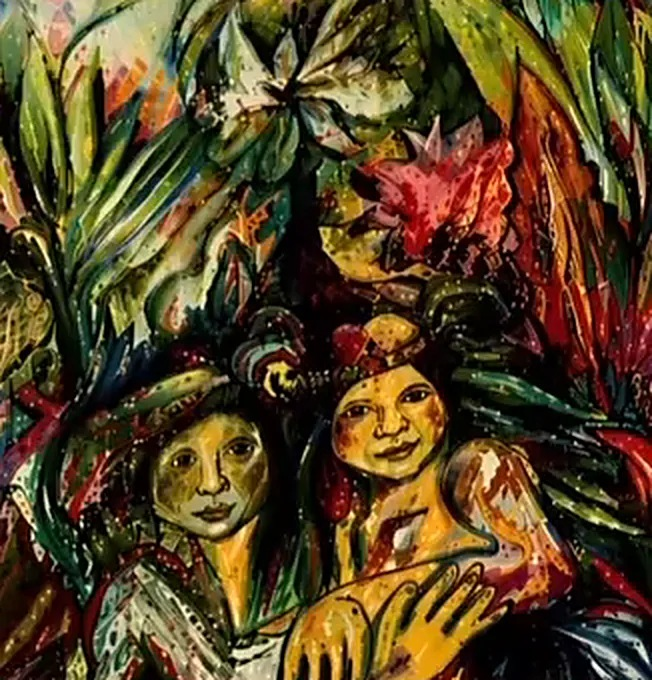
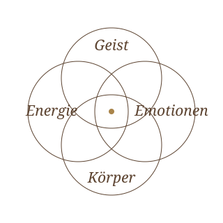
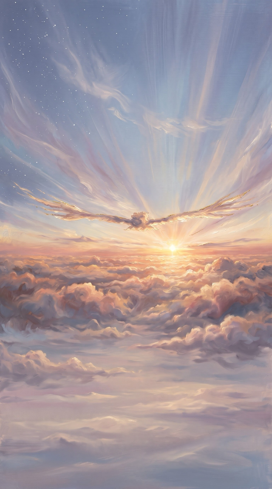
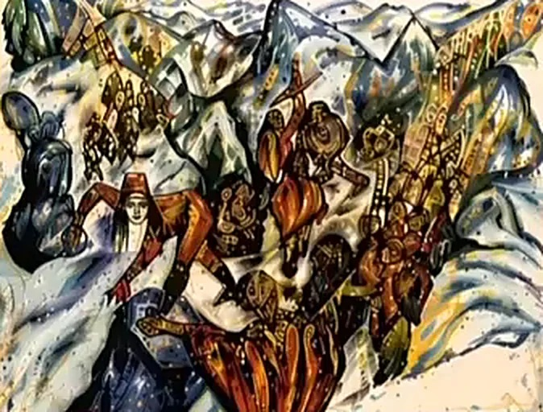

Energiearbeit · Körperwahrnehmung · Kreativer Ausdruck
Zwischen Verstehen und Erleben liegen oft Welten.
Aufklappen & Reise beginnen

Über mich

Ich bin Katharina.
Mutter von drei erwachsenen Kindern, viele Jahre pädagogisch tätig, viele davon im integrativen Bereich, und selbst durch Krisen gegangen.
Mein Weg führte mich zu C. G. Jung, zur Schattenarbeit, zur Tanz- und Ausdrucksarbeit und schließlich zur Energiearbeit der Anden und des Amazonas. Ich bin dankbar, die Munay-Ki-Riten empfangen zu haben.

Veränderung kann niemand für dich machen. Ich begleite dich dabei.
Klar. Achtsam. In deinem Tempo.
So steigen wir gemeinsam ein
Du bestimmst, wie tief du gehen möchtest.
- IKostenloses Kennenlernen
Bis zu 30 Minuten. Wir schauen, was zu dir passt.
- IIAnkommen
Ein energetischer Überblick mit dem Pendel als Orientierung.
- IIIDie Begleitung
Die Methode, die zu deinem Thema passt, mit Körperwahrnehmung und kreativem Ausdruck.
- IVKlärung & Abschluss
Mit Palo Santo und Agua Florida schließen wir die Arbeit ab.

Ich sehe dich als ganzen Menschen.Körper, Geist, Emotionen und Energie gehören zusammen.


Bereit für deinen nächsten Schritt?
Unverbindlich und in Ruhe schauen wir gemeinsam, ob und wie ich dich begleiten kann.
Für dich
Kostenloses Kennenlernen
Bis zu 30 Minuten
Scannen & vereinbarenReise durch die vier Winde
Instagram@katharinawegdervierwinde
Meine Arbeit ist eine energetische und körperorientierte Begleitung. Sie ersetzt keine ärztliche, psychotherapeutische oder heilpraktische Diagnose oder Behandlung. Ich stelle keine Diagnosen und gebe keine Heilversprechen.